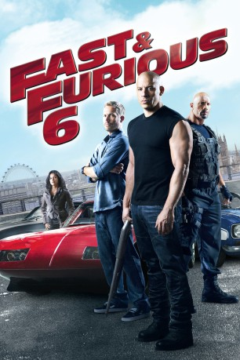
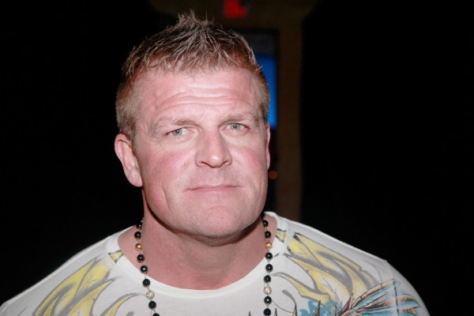
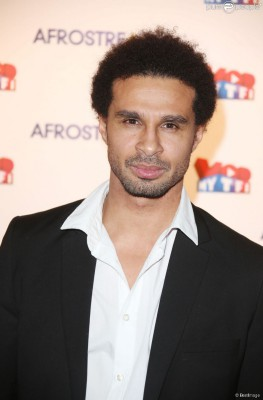
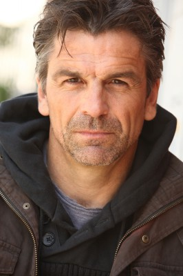

#242 Fast and Furious 6
 
 IMDB-Wertung: 7.1 / 10
IMDB-Wertung: 7.1 / 10  Metascore: 61
Metascore: 61 
Nach ihrem großen Rio-Coup haben sich Dominic Toretto, Brian O'Conner und ihre Crew über die ganze Welt verstreut. Durch die erbeuteten 100 Millionen Dollar sind sie zwar reich, leben jedoch ständig auf der Flucht. An eine Rückkehr in ihre Heimat ist nicht zu denken. FBI-Agent Luke Hobbs ist derweil auf der Jagd nach einer Organisation von zum Töten ausgebildeten Rennfahrern. Die Söldner agieren in über zwölf Ländern. Ihre Befehle erhalten sie von dem übergeordneten Bandenführer Owen Shaw. Unterstützung erhält der Boss von Letty, der totgeglaubten großen Liebe von Dom. Hobbs weiß, dass er die kriminelle Bande nur stoppen kann, wenn er sie auf der Straße besiegt. Dafür braucht er die Hilfe von Dom und bietet diesem an, sich seinem Elite-Team in London anzuschließen. Als Belohnung würden Dom und seine Partner von ihren Verbrechen freigesprochen werden.
Jahr: 2013
Dauer: 130 Minuten
FSK: 12
Land: USA Studio: Universal PicturesTonspuren: DTS - ,
Untertitel: Deutsch,
Auflösung: 1080p (1920x816) Größe: 7905 MB
Genre: Action, Krimi, Thriller
Regisseur: Justin Lin
Drehbuch: Chris Morgan, Gary Scott Thompson
Soundtrack: Lucas Vidal
Darsteller:
 Vin Diesel als Dominic Toretto
Vin Diesel als Dominic Toretto Paul Walker als Brian O'Conner
Paul Walker als Brian O'Conner Dwayne Johnson als Hobbs
Dwayne Johnson als Hobbs- Jordana Brewster als Mia
 Michelle Rodriguez als Letty
Michelle Rodriguez als Letty Tyrese Gibson als Roman
Tyrese Gibson als Roman Sung Kang als Han
Sung Kang als Han Gal Gadot als Gisele
Gal Gadot als Gisele Ludacris als Tej
Ludacris als Tej Luke Evans als Shaw
Luke Evans als Shaw Elsa Pataky als Elena
Elsa Pataky als Elena Gina Carano als Riley
Gina Carano als Riley Clara Paget als Vegh
Clara Paget als Vegh-  Kim Kold als Klaus
- Joe Taslim als Jah
- Benjamin Davies als Adolfson
- Matthew Stirling als Oakes
 David Ajala als Ivory
David Ajala als Ivory Thure Lindhardt als Firuz
Thure Lindhardt als Firuz Shea Whigham als Stasiak
Shea Whigham als Stasiak- Andrei Zayats als Russian Officer
 John Ortiz als Braga
John Ortiz als Braga- Jason Thorpe als Snobby Auctioneer Organizer
 Stephen Marcus als Davies
Stephen Marcus als Davies- Magda Rodriguez als Secretary
- Victor Gardener als NATO Commander
- Françoise Philippart de Foy als Nurse
- Carolina Pozo als Nurse
- Pilar Mayo als Hot Girl
 Lee Asquith-Coe als Sgt Sheldern , uncredited
Lee Asquith-Coe als Sgt Sheldern , uncredited- Dean Barlage als English Driver , uncredited
 Leon Corbin als Shopper , uncredited
Leon Corbin als Shopper , uncredited- Lee Craven als Civilian , uncredited
 Gioacchino Jim Cuffaro als Auction Punter , uncredited
Gioacchino Jim Cuffaro als Auction Punter , uncredited- Steve D'Assis als Precision Driver , uncredited
- Amy Forrest als Hot, Sexy Girl , uncredited
- Mark Haldor als Racer , uncredited
-  Alex Martin als Braga's Thug , uncredited
- Allistair McNab als DSS Soldier , uncredited
 Rita Ora als Race Caller , uncredited
Rita Ora als Race Caller , uncredited Diezel Ramos als DSS Soldier , uncredited
Diezel Ramos als DSS Soldier , uncredited- Deborah Rosan als Model , uncredited
- Gemita Samarra als Auctioneers Assistant , uncredited
 Clem So als Passer-by , uncredited
Clem So als Passer-by , uncredited Jason Statham als Deckard Shaw , uncredited
Jason Statham als Deckard Shaw , uncredited-  Julian Stone als Voice Actor , uncredited
- Bao Tieu als Crowd , uncredited
 Daniel Westwood als Party Goer , uncredited
Daniel Westwood als Party Goer , uncredited- Samuel M. Stewart als Denlinger
- Huggy Leaver als Pawn Shop Owner
Datei: X:\7+mehr(A-Z)\Fast and Furious\Fast and Furious 6 (2013, FSK12, 1920x816).mkv seit 15.02.2015
Festplatte: HD Collection-7+mehr(A-Z)+Person
 Es gibt insgesamt 13 Filme in der Gruppe '7+mehr(A-Z)\Fast and Furious'
Es gibt insgesamt 13 Filme in der Gruppe '7+mehr(A-Z)\Fast and Furious'